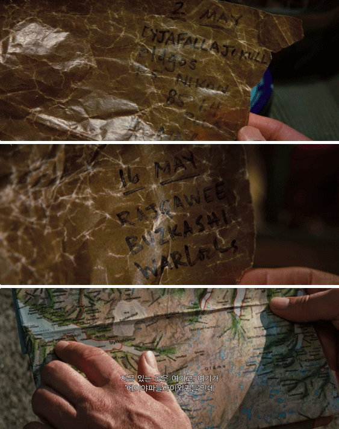

 5/1
미티는 어선에서 숀이 작성한 사진 촬영 일정 메모를 발견한다.
“ 5/2 에이야파들라이외퀴들 엘드고스, 니콘 F5
(EYJAFALLAJOKULL eldgos F5 NIKON)
5/16 라즈쿼위, 부즈카쉬, 워록
(RAJQAWEE BUZKASHI WARLords) ”
어부가 ‘에이야파들라이외퀴들’이 아이슬란드에 있는 화산이라 알려주고 미티는 아이슬란드로 떠나게 된다.